05
Galeria


W różnych sytuacjach
Certyfikacje, praca z grupami i chwile poza gabinetem — bo autentyczność buduje zaufanie.
🏆 Certyfikacje
👥 Praca
🌅 Poza pracą
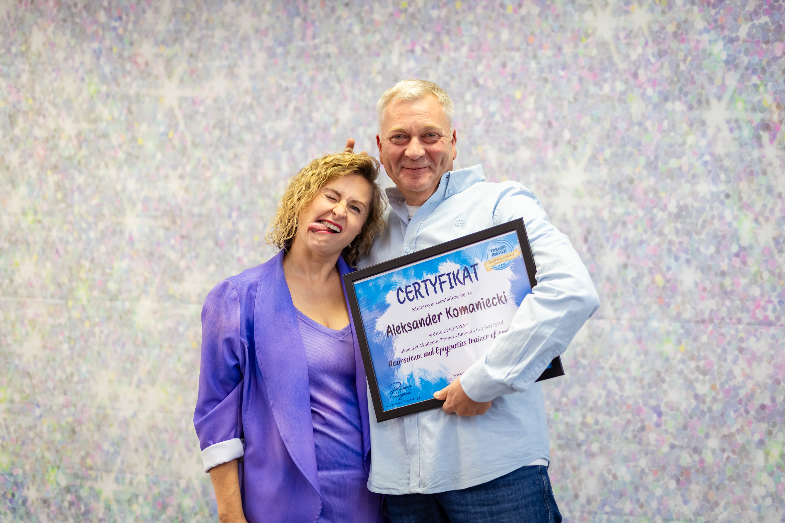
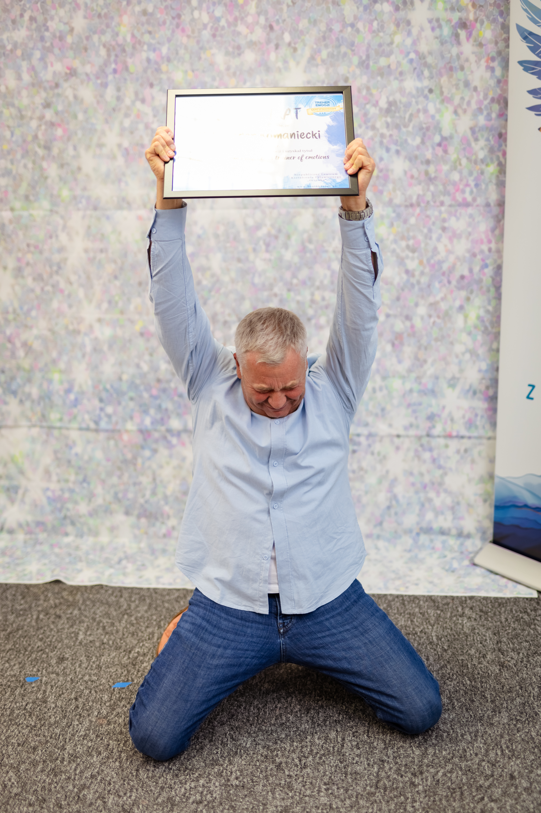
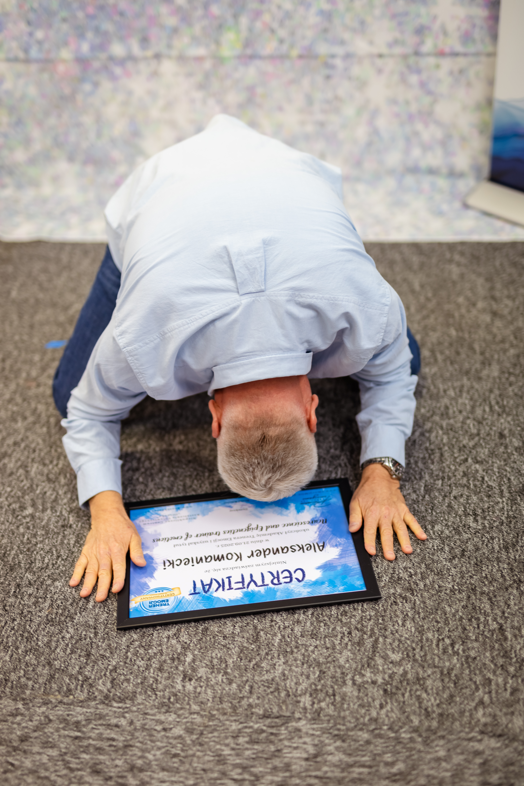
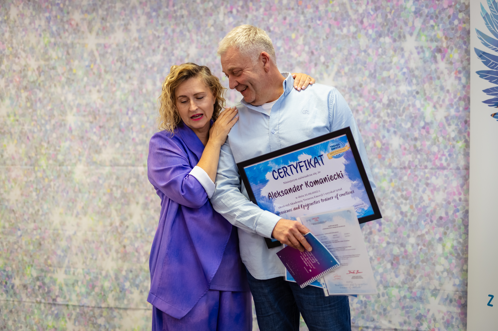
Akademia Trenera Emocji — Neuroscience and Epigenetics Trainer of Emotions, 21.09.2025
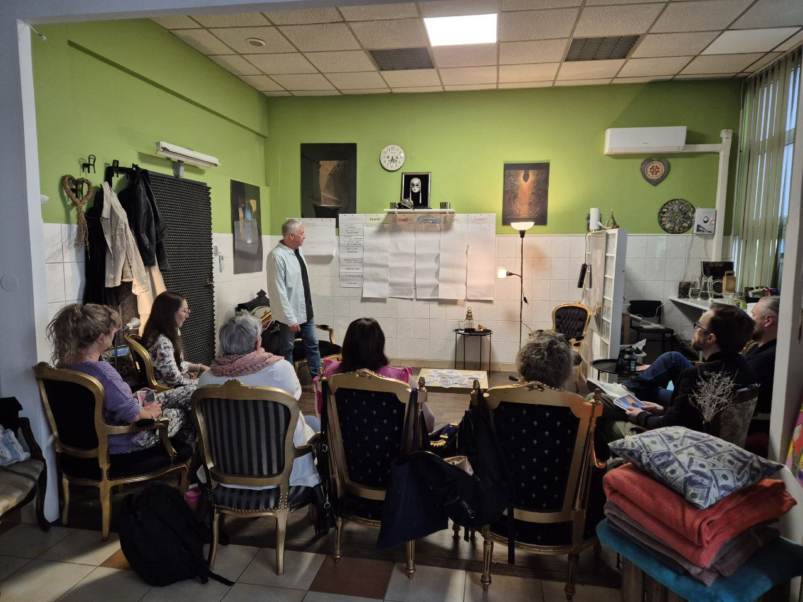
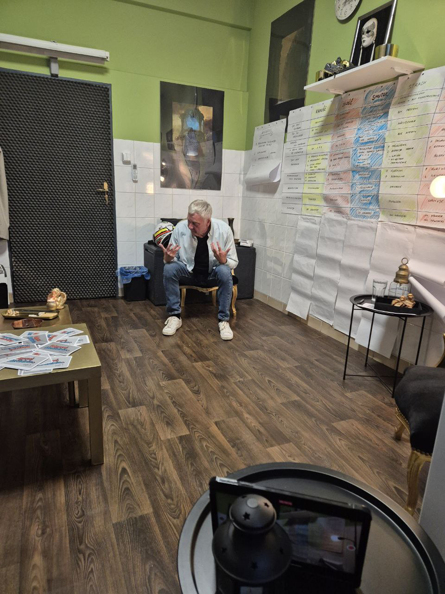
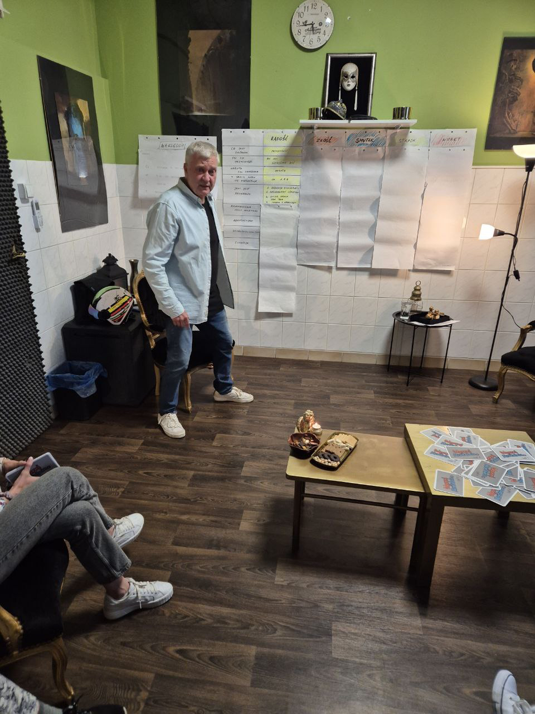
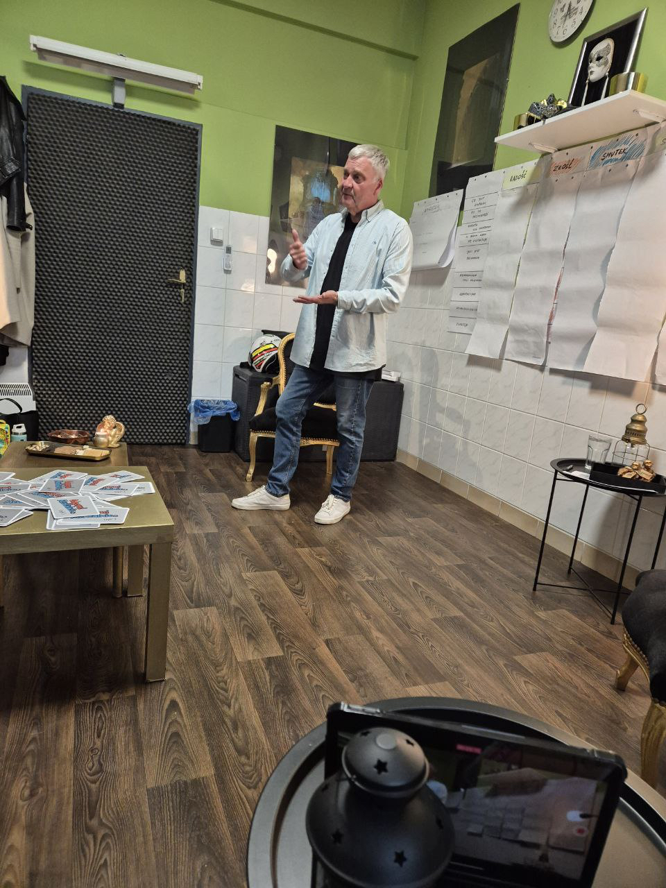
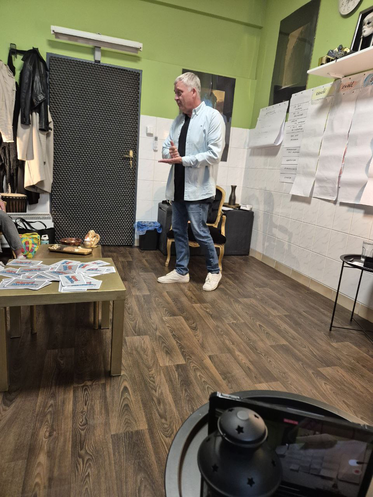
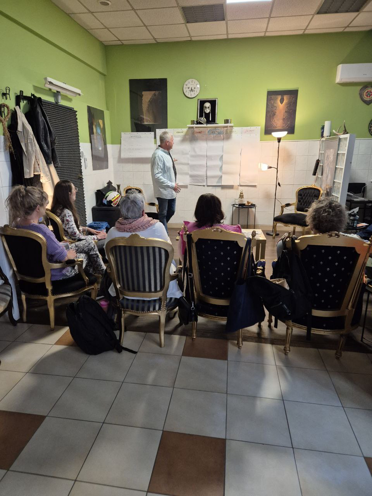
Gabinet w Mysłowicach — szkolenia i sesje grupowe
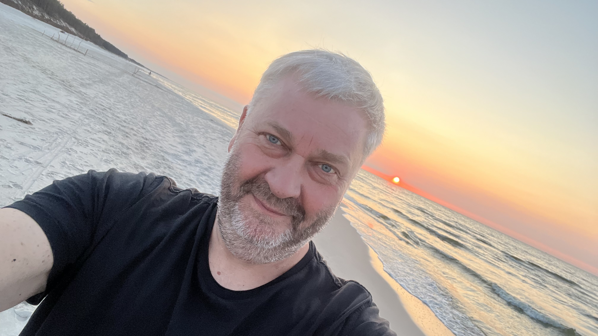
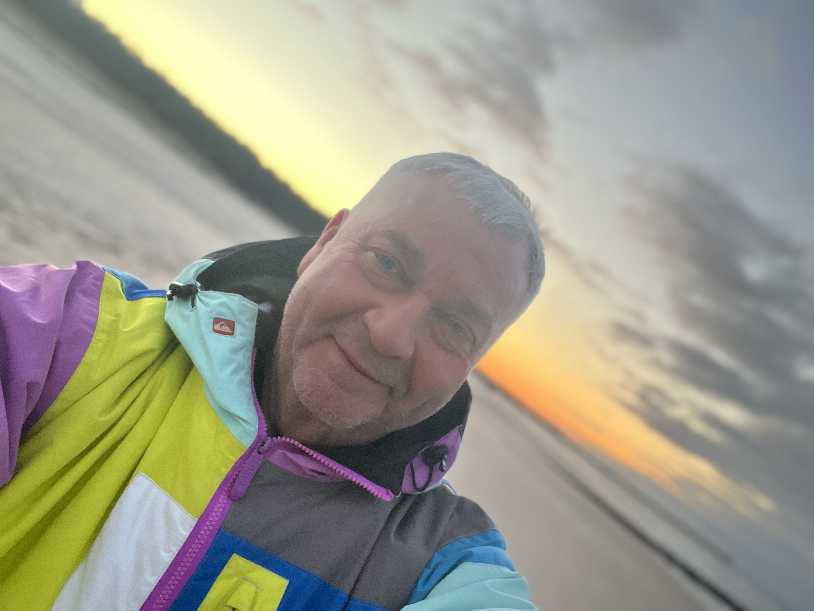
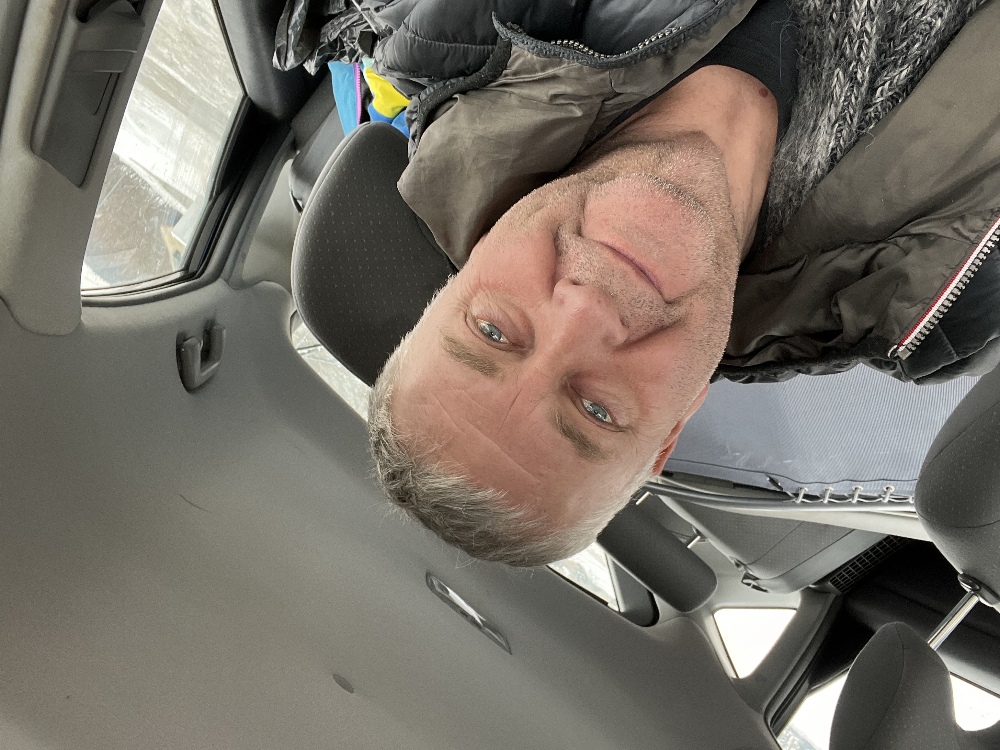
Bo człowiek to nie tylko zawód